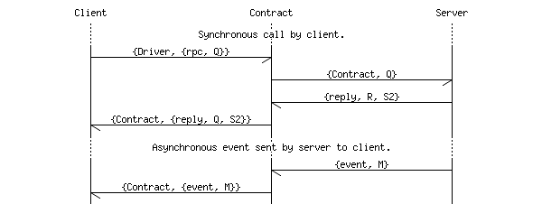

| Overview |  |
Contract manager server
This module implements the contract manager server process, which runs on the Erlang server side, between the UBF driver (or the driver for whatever protocol is being used "over the wire", e.g. JSON-RPC) and the plugin handler server.

In the diagram below, the "Client" is actually the UBF driver (using UBF, EBF, JSON, JSON-RPC, or other transport protocol) that acts on behalf of the remote client. The "Server" is actually the plugin handler server, which acts as an intermediary between the actual server application.
| do_eventOut/3 | |
| do_lpcIn/3 | |
| do_lpcOut/8 | |
| do_lpcOutError/5 | |
| do_rpcIn/3 | |
| do_rpcOut/8 | |
| do_rpcOutError/4 | |
| do_rpcOutError/5 | |
| do_txlog/1 | |
| start/1 | |
| start/2 |
do_eventOut(Msg, State, Mod) -> any()
do_lpcIn(Q, State, Mod) -> any()
do_lpcOut(Ref, Q, State, Mod, Reply, ReplyState, NewState, NewMod) -> any()
do_lpcOutError(Ref, Q, State, Mod, Error) -> any()
do_rpcIn(Q, State, Mod) -> any()
do_rpcOut(Ref, Q, State, Mod, Reply, ReplyState, NewState, NewMod) -> any()
do_rpcOutError(Q, State, Mod, Error) -> any()
do_rpcOutError(Ref, Q, State, Mod, Error) -> any()
do_txlog(TLog) -> any()
start(SpawnOpts::list()) -> pid()
start(VerboseRPC::bool(), SpawnOpts::list()) -> pid()
Generated EDoc, $Id$